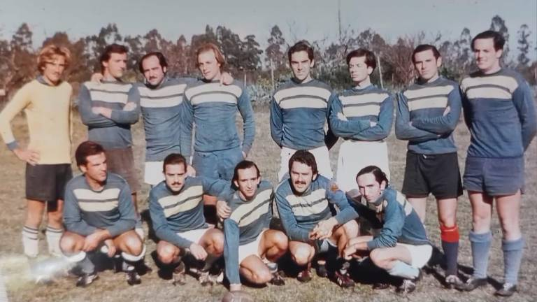

Acerca del Colegio
Misión
Transformando mentes, forjando futuros
El Establecimiento Educativo Los Andes Alta Juventud representada por todos los estamentos de la unidad educativa, tiene como principal objetivo formar seres humanos integrados capaces de desarrollar en todas las áreas: efectivas congnitivas y social.
Fomentar el desarrollo moral, ético, artístico espiritual y físico de los alumnos, mediante las transmisión y el cultivo de los valores destrezas, hábitos y conocimientos que le sea útiles para toda su vida.
El colegio otorgará las experiencias y herramientas necesarias a cada alumno, para así, ir desarrollando así sus pensamientos creativos, reflexivos y críticos
Visión
Empoderando la diversidad, cultivando el aprendizaje
La visión de nuestra escuela es asegurar un ambiente educativo de Calidad para todos nuestros estudiantes, que atiendan a la diversidad y respeto los ritmos y estilos de aprendizaje de cada uno de ellos.
Con un equipo docente comprometido con la unidad educativa y en constante perfeccionamiento, materializando los ideales de equidad, facilitando el aprendizaje significativo y alejado de la deserción escolar.
Conoce nuestra historia
De la tragedia a la inspiración
Para nosotros es muy memorable el milagro sucedido en los Andes. El trágico accidente del avión de la fuerza uruguaya dónde un equipo de rugby se dirigía a Santiago de chile para jugar un partido, el avión se estrelló en la cordillera de los Andes, donde viajaban 40 pasajeros y 5 tripulantes, el accidente fue ocasionado a una mala administración de tiempo, ya que tanto el piloto como el copiloto informaron que habían cruzado los Andes en 3 minutos cuando el tiempo estipulado es 10 minutos, en la leyenda de los Andes dice que intenta tragarse a cada avión que pasa por ahí por lo cual deben hacer un desvío hacia abajo para poder cruzar a Chile.
Lamentablemente murieron 29 personas, quedando 16 sobrevivientes, tomamos el esfuerzo de Fernando parrado y Roberto Canessa como inspiración para nuestro colegio dónde tomamos en cuenta el esfuerzo que cada estudiante hace al realizar sus tareas y proyectos, nos consta mucho la situación que ellos vivieron en la manera en la que se alimentaron y como ellos valoran cada cosa por más mínima que sea después de haber vivido 72 días en la Cordillera de los Andes,
Pedimos que cada estudiante tome respeto hacia Numa turcatti ya que él fue inspiración para Roberto canessa y decidió cruzar los Andes donde tardó 10 días caminando junto con Carlos Páez, hasta encontrar a Sergio catalán quien les brinda la ayuda necesaria para poder regresar a Uruguay su país de origen. Durante el accidente ellos mismos generaron sus recursos, dos de ellos atendieron a los enfermos ya que llevaban meses estudiando en la universidad doctorado médico, esto les fue de una gran ayuda gracias a sus conocimientos básicos pudieron ayudar a sus compañeros, tanto los ingenieros para construir instrumentos que les ayudarían en la caminata, tanto como para generar agua, tomamos la actitud de Fernando parrado como una inspiración a no rendirnos, a buscar ayuda, a no esperar que alguien más venga a buscarnos, agradecemos a Dios por regresar a esas 16 personas para traernos un testimonio de lo que ellos pasaron tanto como las bendiciones que nuestro colegio ha recibido en honor a Numa Turcatti, nuestro equipo de fútbol toma su nombre.
